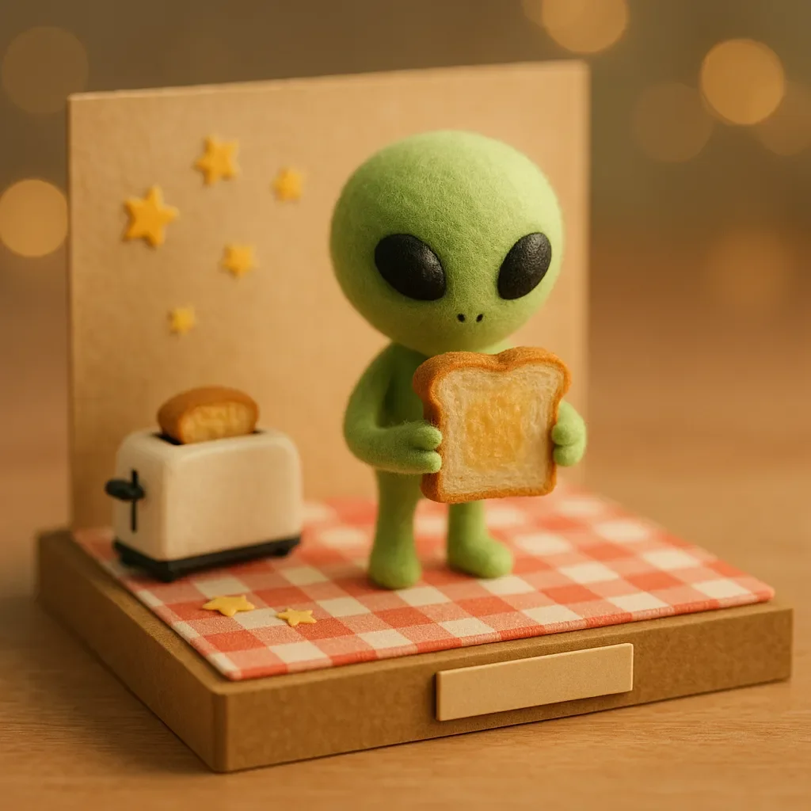

내부 외계인 우주선 - 낮
[INTERIOR AN ALIEN SPACECRAFT - DAY]
밥은 작은 금속 테이블에 앉아 좌절감과 당혹감이 뒤섞인 채로 있다. 그의 손은 정원용 호스처럼 보이는 물건으로 앞에 묶여 있다. 그 맞은편에는 세 명의 외계인이 앉아 있으며, 모두 밥을 호기심 어린 눈빛으로 뚫어지게 쳐다보고 있다. 외계인들은 녹색을 띠고 있으며 셀러리 줄기와 비슷하게 생겼다. 다만 셀러리 줄기에 지나치게 많은 눈이 달려 있다면 말이다.
[Bob is sitting at a small metal table, feeling a mix of frustration and bewilderment. His hands are tied in front of him with something that looks suspiciously like a length of garden hose. Across from him, three ALIENS sit, all staring at Bob with a sort of curious intensity. The aliens are greenish and look vaguely like celery stalks, if celery stalks were equipped with far too many eyes.]
밥
[BOB]
(빵 조각으로 손짓하며)
[(gesturing with a piece of bread)]
“그래서 말이죠, 정말 중요한 건 균형이에요. 버터를 너무 적게 바르면, 음, 건조하잖아요? 하지만 너무 많이 바르면 빵이 그냥… 무너져버리죠.”
[So, really, it’s all about the balance. Too little butter, and, well, it’s dry, isn’t it? But too much, and the bread just… collapses.]
외계인들은 각자 여섯 개의 눈을 깜빡이며, 관대하게 해석하자면 열중하고 있는 것처럼 보인다. 그들의 줄기 같은 몸은 약간 앞으로 기울어져 있고, 더듬이는 호기심에 찬 듯 움직이고 있다.
[The aliens blink, all six eyes each, in what might generously be interpreted as rapt attention, their stalk-like bodies leaning slightly forward, antennae twitching with curiosity.]
밥 (계속)
[BOB (CONT’D)]
“하지만 진짜 비결은 말이죠—진짜 비결은—완벽한 온도를 맞추는 거예요. 너무 녹지 않고, 너무 단단하지 않고, 딱 알맞은…”
[But the real trick—the real trick—is getting it to the perfect temperature. Not too melted, not too solid, just the right…]
그는 말을 흐리며, 외계인들 중 단 한 명도 더 이상 눈을 깜빡이지 않고 있다는 것을 깨닫는다. 그들의 눈은 크게 뜨여 있고, 매혹된 듯 보인다. 밥은 목을 가다듬으며 약간 불편한 기분을 느낀다.
[He trails off, realizing that not a single alien seems to be blinking anymore. Their eyes are wide, fascinated. Bob clears his throat, feeling just a little uneasy.]
밥 (계속)
[BOB (CONT’D)]
“그래서, 그렇게 토스트에 버터를 바르는 거예요.”
[Anyway, that’s how you butter toast.]
긴 침묵이 이어진다. 외계인 중 한 명인 조브(물론 밥은 그들의 이름을 알려고 하지 않았다)가 깊은 한숨을 내쉰다—아니, 그와 비슷한 소리를 낸다. 자갈 위로 정원용 갈퀴를 끄는 소리에 더 가깝다.
[There’s a long pause. One of the aliens, ZORB (though Bob hasn’t bothered to learn their names), lets out a deep sigh—or something similar, more like the sound of a garden rake dragged over gravel.]
조브
[ZORB]
(심한 억양의 영어로)
[(in heavily accented English)]
“놀랍군요. 당신은 정말로 이 ‘토스트'에 대해 많이 이해하고 있군요.”
[Incredible. You truly understand much about this “toast.”]
밥은 긴장한 채로 미소 짓는다.
[Bob smiles nervously.]
밥
[BOB]
“음, 감사합니다. 노력했죠. 그런데, 저를 풀어주는 것에 대해서…”
[Well, thank you. I try. Now, about letting me go…]
또 다른 외계인인 글란이 나뭇잎 같은 부속물을 들어올린다.
[Another alien, GLARN, raises a leafy appendage.]
글란
[GLARN]
(말을 가로막으며)
[(interrupting)]
“토스터에 대해 다시 말해주세요. 어떻게 열을 가하는지요.”
[Tell us again about the toaster. How it heats.]
밥은 한숨을 쉬며 자신의 손을 묶고 있는 정원용 호스를 바라본다. 그는 이 난장판에 어떻게 휘말리게 되었는지 다시 한 번 의아해한다. 모든 것은 이웃의 순진해 보이는 토스터 수리 요청으로 시작되었다—그 요청이 어떻게 과열된 외계인들에 의해 '토스트 전문가'로 오해받게 되는 상황으로 이어졌는지는 알 수 없었다.
[Bob sighs, looking at the garden hose tying his hands. He wonders, not for the first time, how he ended up in this mess. It had all started with what seemed like an innocent toaster repair request from his neighbor—a request that somehow ended with him being mistaken for a 'toast expert’ by some overzealous aliens.]
밥
[BOB]
“그래요. 토스터 말이죠. 음, 모든 것은 전기로 시작돼요… 아시다시피, 전선을 통해 흐르면서 물건을 뜨겁게 만드는 그거요. 토스터를 전원에 연결하면 전기가 내부의 코일을 가열해요. 빵을 넣고… 그리고 기다리죠. 하지만 자리를 비우면 안 돼요. 항상 빵이 튀어나와서 깜짝 놀랄 위험이 있거든요.”
[Right. The toaster. Well, it all starts with electricity… you know, that thing that flows through wires and makes stuff hot. You plug the toaster in, and the electricity heats up the coils inside. The bread goes in, and… well, you wait. You really shouldn’t leave it unattended, though. There’s always the risk it will pop out and scare you half to death.]
외계인들은 이제 더 가까이 몸을 기울이며 열심히 메모를 하고 있다.
[The aliens are now leaning even closer, taking notes furiously.]
조브
[ZORB]
(특이한 도구로 메모를 휘갈기며)
[(scrawling notes with an unusual instrument)]
“전기… 코일… 놀람의 위험. 흥미롭군.”
[Electric… coils… risk of fright. Fascinating.]
밥
[BOB]
“네, 흥미롭죠. 저기, 잠깐 쉬어야 할 것 같아요. 물 좀 마실 수 있을까요? 아시잖아요, 수분 보충이요?”
[Yeah, fascinating. Look, I could really use a break. Maybe some water? You know, hydration?]
외계인들은 서로를 바라보며 무언의 의사소통을 하는 것 같다. 마침내 글란이 고개를 끄덕인다.
[The aliens look at each other, and a silent communication seems to pass between them. Finally, GLARN nods.]
글란
[GLARN]
“지구인이 액체 영양분을 필요로 하는군. 용기를… 가져오게.”
[Earthling requires liquid sustenance. Fetch… the container.]
프리그라는 이름의 더 작은 외계인이 재빨리 움직여 나가더니 이상하게 생긴 큰 용기를 가지고 돌아온다. 그 용기는 서로 어울리지 않는 부품들로 만들어진 것 같아 보인다—반은 주전자, 반은 물뿌리개 같다.
[Another alien, a smaller one named FRIG, quickly shuffles off and returns with a large, awkward-looking vessel that appears to be made of mismatched parts—half kettle, half watering can.]
프리그
[FRIG]
(용기를 들고)
[(holding the vessel)]
“여기 있습니다. 지구인을 위한 액체입니다.”
[Here. Liquid for the Earthling.]
밥은 눈썹을 치켜 올리며 그 용기를 쳐다본다.
[Bob stares at the vessel, his eyebrows raising.]
밥
[BOB]
“어… 고마워요? 이걸로… 마시면 되나요?”
[Uh… thanks? Do I… drink from this?]
글란
[GLARN]
“그렇소, 그것은 음료 기구요. 우리는 확신하오.”
[Yes, it is a drinking device. We are certain of it.]
밥은 망설이며 용기를 받아들고 안을 들여다본다. 액체는 희미한 푸른 빛을 띠고 있으며 약간 빛나고 있다. 그는 조심스럽게 냄새를 맡아보고는 코를 찡그린다.
[Bob takes the vessel hesitantly and peers inside. The liquid has a faint bluish tint and a slight glow. He takes a cautious sniff and wrinkles his nose.]
밥
[BOB]
“이거… 방사능 물질인가요?”
[Is this… radioactive?]
조브
[ZORB]
(열정적으로)
[(enthusiastic)]
“아주 약간이죠! 회복 효과가 있어요. 당신이 좋아할 거예요.”
[Only mildly! It has restorative properties. You will enjoy it.]
밥은 한숨을 쉬며 빛나는 액체의 “회복 효과"를 시험해 볼 생각은 없다는 듯이 그 용기를 테이블 위에 내려놓기로 한다.
[Bob sighs and decides to set the vessel down on the table, not quite willing to risk whatever "restorative properties” the glowing liquid might have.]
밥
[BOB]
“그래요, 어디까지 얘기했죠? 아, 맞아요, 전기와 토스트요.”
[Right, so where were we? Oh, yes, electricity and toast.]
그는 이제 완전히 식어버린 빵 조각을 들어 올리며, 말하면서 그것으로 손짓한다.
[He holds up the now very cold piece of bread, gesturing with it as he speaks.]
밥 (계속)
[BOB (CONT’D)]
“보세요, 토스트를 만드는 과정은 예술이에요. 타이밍이 전부죠. 너무 오래 기다리면 벽돌로 쓸 수 있을 정도로 딱딱해져요. 충분히 오래 두지 않으면 그냥 따뜻한 빵이 되고 말죠. 황금빛 갈색의 완벽함과 완전한 실패 사이에는 아주 미묘한 차이가 있어요.”
[You see, the toasting process is an art. Timing is everything. If you wait too long, you end up with something that could double as a brick. Not long enough, and you just have warm bread. There’s a fine line between golden-brown perfection and utter disaster.]
외계인들은 일제히 고개를 끄덕이며 넋이 나간 듯 보인다.
[The aliens nod in unison, transfixed.]
글란
[GLARN]
“우리는 이 완벽함을 이해해야 해요. 황금빛 갈색 단계가 매우 중요하군요.”
[We must understand this perfection. The golden-brown stage is critical.]
밥은 지친 듯 눈을 굴린다.
[Bob rolls his eyes, exasperated.]
밥
[BOB]
“네, 네, 황금빛 갈색이요. 계속 지켜봐야 해요. 언제 튀어나올지 모르니까요. 그 놀라움이 재미의 반이죠. 하지만 이런 걸로 손이 묶여 있으면 그다지 재미있지 않아요.”
[Yes, yes, golden-brown. You’ve got to keep an eye on it. You never know when it’s going to pop up, and the surprise is half the fun. But, you know, not so fun when your hands are tied with… whatever this is.]
밥은 묶인 손을 흔들어 정원용 호스를 살짝 덜그럭거린다. 외계인들은 걱정스러운 눈빛을 교환한다.
[Bob shakes his tied hands, rattling the garden hose slightly. The aliens exchange concerned looks.]
프리그
[FRIG]
“아마도 지구인을 풀어줘야 할 것 같아요. 그가 묶인 채로는 제대로 시범을 보일 수 없어요.”
[Perhaps we should untie the Earthling. He cannot demonstrate properly while restrained.]
조브
[ZORB]
(회의적으로)
[(skeptical)]
“하지만 지구인은 위험할 수 있어요. 그는 '전기'와 '포크'에 대해 말하고 있잖아요.”
[But the Earthling could be dangerous. He speaks of “electricity” and “forks.”]
밥
[BOB]
“장난 안 친다고 약속할게요. 제대로 보여드리려면 손을 자유롭게 해야 해요. 그리고 어쩌면, 정말 어쩌면 토스트 얘기는 그만하고 다른 얘기로 넘어갈 수 있을지도 모르죠. 다른 음식들도 있다고요. 팬케이크라든가. 아니면 스크램블 에그라든가.”
[I promise, no funny business. I just need my hands free to properly show you how it’s done. And maybe, just maybe, we can move on from toast. There are other foods, you know. Pancakes, for instance. Or scrambled eggs.]
외계인들은 숨을 헉 들이쉬며 눈을 더욱 크게 뜬다. 밥이 그들의 신경을 건드린 것 같다.
[The aliens gasp, their eyes widening even further. It seems Bob has struck a nerve.]
글란
[GLARN]
“팬케이크? 달걀? 이것들은… 다른 형태의 영양분인가요?”
[Pancakes? Eggs? These are… other forms of sustenance?]
밥
[BOB]
“오, 물론이죠. 나뭇잎 친구들, 아침 식사의 세계는 정말 넓답니다. 이… 묶은 것만 좀 풀어주시면 그 모든 것에 대해 말씀드릴 수 있을 텐데요.”
[Oh, absolutely. There’s a whole world of breakfast out there, my leafy friends. I could tell you all about it, if you’d just loosen these… bonds.]
외계인들은 모여서 삐걱거리는 소리와 바스락거리는 소리를 내며 서로 속삭인다. 마침내 글란이 밥에게 돌아선다.
[The aliens huddle together, whispering amongst themselves in a series of squeaks and rustles. Finally, GLARN turns back to Bob.]
글란
[GLARN]
“고려해 보겠습니다. 하지만 먼저, 우리는… 버터에 대해 알아야 합니다.”
[We shall consider it. But first, we must learn about… the butter.]
밥은 의자에 털썩 주저앉으며 신음한다.
[Bob slumps in his chair, groaning.]
밥
[BOB]
(혼잣말로)
[(to himself)]
“그럼 그렇지. 항상 버터로 돌아오는군.”
[Of course. Always back to the butter.]
외계인들은 서로 눈빛을 교환하고, 그 중 한 명이 박수를 친다—아니면 외계인 식의 박수를 치는데, 이는 마치 고무장갑을 천천히 벗는 소리와 비슷하다. 갑자기 천장의 작은 해치가 열리고 무언가가 내려온다.
[The aliens exchange glances, and one of them claps—or does the alien equivalent, which sounds a bit like a rubber glove being pulled off in slow motion. Suddenly, a small hatch in the ceiling opens and something descends.]
밥은 눈을 찡그리고 그것을 바라본다. 거대한… 버터 제조기처럼 보인다.
[Bob squints at it. It appears to be a giant… butter churn.]
밥 (계속)
[BOB (CONT’D)]
“오, 농담이겠죠.”
[Oh, you’ve got to be kidding me.]
글란
[GLARN]
(열정적으로)
[(enthusiastic)]
“버터의 방식을 우리에게 가르쳐주세요!”
[Teach us the way of the butter!]
밥은 의자에 더욱 깊이 주저앉으며 지친 표정을 짓는다. '화요일을 보낼 수 있는 모든 가능한 방법 중에,’ 그는 생각했다, '채소 같은 외계인들의 아침 식사 교사가 되는 건 천 가지 안에도 들지 않았을 텐데.’ 그는 길고 과장된 신음 소리를 내며 어깨를 극적으로 축 늘어뜨렸다.
[Bob slumps further in his chair, looking exhausted. 'Of all the possible ways to spend my Tuesday,’ he thought, 'being a breakfast tutor for vegetable aliens wasn’t even in the top thousand.’ He let out a long, exaggerated groan, his shoulders sagging dramatically.]
밥
[BOB]
(혼잣말로)
[(to himself)]
“최악의. 납치. 경험이군.”
[Worst. Abduction. Ever.]
글란
[GLARN]
(열심히 설명하며)
[(explaining eagerly)]
“버터는 특정한 농도에 도달해야 하죠, 맞나요? 토스트처럼 너무 딱딱하거나 너무 부드러워서는 안 되고요.”
[The butter must reach a certain consistency, correct? Like the toast, it cannot be too hard or too soft.]
밥
[BOB]
(무덤덤하게)
[(flat)]
“정확해요. 너무 묽으면 안 돼요, 그러면 토스트에 스며들어버리니까요. 하지만 너무 차가우면, 음, 콘크리트를 바르는 것과 다를 바 없죠.”
[Exactly. You don’t want it too runny, otherwise it soaks the toast. But if it’s too cold, well, you may as well be spreading concrete.]
프리그
[FRIG]
(열심히 메모하며)
[(taking notes furiously)]
“농도… 콘크리트 피하기… 기록했습니다.”
[Consistency… avoid concrete… noted.]
밥은 고개를 젓고 인내심이 바닥나고 있다.
[Bob shakes his head, his patience waning.]
밥
[BOB]
“보세요, 여기엔 많은 세부사항이 있어요. 버터 농도, 토스트 타이밍, 온도 조절… 이건 섬세한 예술이에요. 그냥 저를 풀어주시면 제가 모든 걸 적어드릴 수 있을 것 같은데요.”
[Look, there are lots of details here. Butter consistency, toast timing, temperature control… it’s a delicate art. Maybe you should just let me go, and I can write it all down for you.]
외계인들은 호기심 어린 눈빛을 교환한다. 글란이 조심스럽게 더 가까이 몸을 기울인다.
[The aliens exchange a curious look. GLARN leans closer, tentatively.]
글란
[GLARN]
“지구인이… 우리를 위해 설명서를 작성할 수 있을까요?”
[Could the Earthling… write an instruction manual for us?]
밥의 눈에 희망의 빛이 반짝인다.
[Bob perks up, hope flickering in his eyes.]
밥
[BOB]
“그래요! 설명서요! 여러분이 알아야 할 모든 것을 글로 적을 수 있어요. 그게 도움이 되지 않을까요?”
[Yes! An instruction manual! I could put everything you need to know in writing. Wouldn’t that be helpful?]
조브
[ZORB]
(천천히 고개를 끄덕이며)
[(nodding slowly)]
“글쓰기… 영구적인 의사소통의 한 형태로군. 흥미롭군.”
[Writing… a form of permanent communication. Fascinating.]
밥은 그들이 실제로 자신을 풀어줄지도 모른다는 안도감에 미소 짓는다.
[Bob grins, relieved that they might actually let him go.]
밥
[BOB]
“맞아요. 모든 걸 적어둘 수 있고, 그러면 저를 여기 묶어둘 필요가 없을 거예요.”
[Exactly. I could write it all down, and you wouldn’t need to keep me tied up here.]
글란
[GLARN]
“하지만 먼저…”
[But first…]
밥의 미소가 사라진다.
[Bob’s smile fades.]
밥
[BOB]
“오 이런, 이번엔 뭐죠?”
[Oh no, what now?]
글란
[GLARN]
“설명서를 작성하기 전에, 우리는 실제 시연을 해봐야 합니다. 지구인, 당신이 버터를 만드는 방법을 우리에게 보여줘야 합니다.”
[Before the manual, we must conduct a practical demonstration. You must show us how to produce the butter, Earthling.]
밥은 거대한 버터 제조기를 바라보며 믿기지 않는다는 듯한 표정과 체념한 표정을 동시에 짓는다.
[Bob stares at the giant butter churn, his expression a mix of disbelief and resignation.]
밥
[BOB]
“있잖아요, 사실 저는 이런 걸 한 번도 사용해본 적이 없어요. 보통은 그냥 가게에서 버터를 사거든요.”
[You know, I’ve never actually used one of these before. I usually just get my butter from the store.]
프리그
[FRIG]
(호기심에 찬)
[(Curious)]
“가게라고요? 버터를… 구할 수 있는 장소인가요?”
[Store? A place where… butter is obtained?]
밥
[BOB]
“네, 그냥 사면 돼요. 아무것도 젓지 않아도 되죠.”
[Yeah, you just buy it. No need to churn anything.]
외계인들은 이 새로운 사실에 당혹스러워 보인다.
[The aliens seem perplexed by this revelation.]
글란
[GLARN]
“하지만 직접 젓지 않고 어떻게 완벽한 농도인지 알 수 있나요?”
[But how do you know it is of perfect consistency without churning it yourself?]
밥
[BOB]
“음… 신뢰겠죠? 만드는 사람들을 신뢰하는 거예요.”
[Uh… trust, I guess? You trust the people who make it.]
외계인들은 서로를 바라보며 깊이 고민하는 듯하다.
[The aliens look at each other, deeply troubled.]
조브
[ZORB]
“신뢰는 매우 복잡한 개념이군요. 우리는 아직 그것을 이해하지 못합니다.”
[Trust is a very complex concept. We do not yet understand it.]
밥
[BOB]
“그래요, 뭐, 인류에 오신 걸 환영합니다. 저기, 버터 젓는 걸 그냥 건너뛰면 안 될까요? 대신 잼에 대해 가르쳐 드릴 수 있어요. 아니면 마멀레이드. 또는 땅콩 버터도 좋고요.”
[Yeah, well, welcome to humanity. Look, can we just skip the butter churning? I can teach you about jam instead. Or marmalade. Or even peanut butter.]
외계인들은 일제히 숨을 들이쉬며 새로운 가능성에 압도된 듯 보인다.
[The aliens all gasp in unison, clearly overwhelmed by the new possibilities.]
글란
[GLARN]
“땅콩… 버터? 또 다른 형태의 버터인가요?”
[Peanut… butter? Another form of butter?]
밥
[BOB]
“오, 여러분은 상상도 못하실 거예요. 완전히 다른 경험이죠. 부드러운 것도 있고 바삭한 것도 있어요. 이것도 토스트에 발라 먹어요.”
[Oh, you have no idea. It’s an entirely different experience. Smooth, or crunchy, and you put it on toast too.]
이제 외계인들은 흥분으로 거의 진동하고 있으며, 그들의 눈은 경이로움으로 반짝이고 있다.
[The aliens are practically vibrating with excitement now, their eyes glistening with wonder.]
프리그
[FRIG]
“우리는 이 땅콩 버터에 대해 배워야 해요. 가르쳐주세요!”
[We must learn of this peanut butter. Teach us!]
밥은 고개를 흔들며 주저앉는다.
[Bob slumps, shaking his head.]
밥
[BOB]
(혼잣말로)
[(to himself)]
“정말 말을 그만해야겠어.”
[I’ve really got to stop talking.]
글란
[GLARN]
(열정적으로)
[(enthusiastic)]
“지구인, 땅콩 버터부터 시작하세요!”
[Begin with the peanut butter, Earthling!]
밥은 버터 제조기를 힐끗 보고 다시 열정적인 외계인들을 바라본다. 그는 극적으로 한숨을 쉰다. '내 인생이 어쩌다 이렇게 됐지?’ 그는 어리둥절해하며 생각했다. '여기 서서 우주 셀러리들에게 버터 젓는 법을 가르치려고 하다니. 어딘가에서 내 이웃은 아마도 여전히 토스터를 기다리고 있겠지.’
[Bob glances at the butter churn, then back at the eager aliens. He sighs dramatically. 'How did my life come to this?’ he wondered, bemused. 'I’m standing here about to teach space celery how to churn butter. Somewhere out there, my neighbor is probably still waiting for his toaster.’]
밥
[BOB]
“알겠어요, 알겠어요. 하지만 진지하게, 이거 끝나고 나면 아침 식사 말고 다른 얘기로 넘어갈 수 있을까요?”
[Alright, alright. But seriously, after this, can we please move on to something other than breakfast foods?]
조브
[ZORB]
“아마도요. 하지만 아침은 하루 중 가장 중요한 식사 아닌가요?”
[Perhaps. But breakfast is the most important meal of the day, is it not?]
밥
[BOB]
(패배한 듯이)
[(defeated)]
“그래요… 그렇죠. 그냥 시작합시다.”
[Yeah… sure. Let’s just get on with it.]
화면 암전
[FADE OUT]